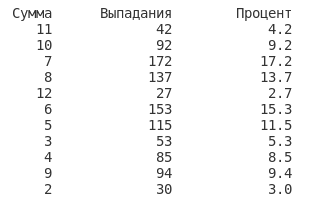

27. Две игральные кости. (в коде есть строки из следующих тем: "библиотеки").
Условие:
Нужно симулировать 1000 выбрасываний двух костей.
На экран должны быть выведены сумма двух костей, количество выпаданий и процент выпаданий.
Пример:

Код:
import random
# создадим словарь, где ключи - это сумма очков на костях. Наполним значениями ключи (кол-во раз выпадания такой суммы).
result_dict = {} # конечный словарь
count = 1000 # счетчик, который будем уменьшать
while count > 0:
x = random.randint(1, 6) # первая кость
y = random.randint(1, 6) # вторая кость
amount = x + y
if amount not in result_dict: # создать ключ с суммой
result_dict[amount] = 1
else: # копить значения ключа
result_dict[amount] += 1
count -= 1
# красивый вывод на печать
print()
print("%10s%15s%15s" % ("Сумма", "Выпадания", "Процент"))
for a, b in result_dict.items():
c = round((b / sum(result_dict.values()) * 100), 2)
print("%10s%15s%15s" % (a, b, c))
print()